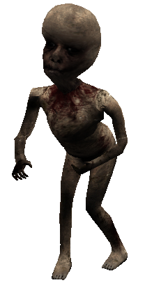

J Ä S E N E T
Juuso Poutiainen (Andy) - Kyselyn kehittäjä 👽
Juuso (Andy) on reipas nuori koululainen, jossa elää paljon potentiaalia mihin vain. Hän kehitti meille toimivan ja hyvän kyselyn. Hänestä opiskelu on mukavaa ja kaikin puolin kivaa.
Eetu Haapalehto (Humanoidi) - Ohjelmoija 👽
Tämän sivuston kehittäjä ja suunnittelija. -Käytin aikaa tämän tekemiseen useita vartteja ja olen tyytyväinen meidän hyvään yhteistyöhön Juuson ja Nikon kanssa. Harrastan ohjelmointia ja suunnitelua. :)

Niko Litja (Titan) - Kirjoittaja 👽
Niko on taitava kirjoittaja ja tekstin hallitsija, jolta aiheesta kuin aiheesta irtoaa viisasta ja jeesustelevaa tekstiä. Titanista on vaikka miksi, oli se sitten lääkäriksi tai lentäjäksi.